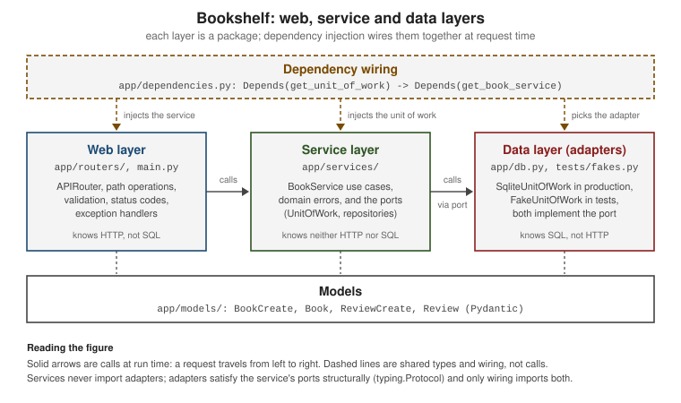

Project Structure & Layered Architecture
|
This content was generated with the assistance of AI and should be verified against the official documentation before being relied on in production. |
This page is written against FastAPI 0.142.2 (released 2026-09-30), Pydantic 2.13 and Starlette 1.7, checked on
2026-10-02. FastAPI supports Python 3.10 through 3.14; the code on this page was executed on Python 3.13. A single
main.py is fine for a first endpoint and a bad place to keep a real service. This page shows how the Bookshelf API
leaves that file: first the mechanics FastAPI gives you for splitting an application (APIRouter, include_router,
packages and relative imports), then an architecture on top of them — web, service and data layers, with
dependency injection wiring the layers together so that tests can swap the
database for a fake without touching an environment variable. Every file shown below belongs to one working project
that was run with TestClient and with the fastapi dev command; the test run is quoted in
the testing section.
Why Split an Application, and Along Which Lines
FastAPI itself imposes no layout: an application is any FastAPI instance that can be imported. Two separate
questions follow once the code outgrows one file, and it helps to keep them apart:
-
How do I spread path operations over several files? This is a framework question. The answer is
APIRouter, described in the next sections. If you come from Flask, anAPIRouterplays the role of a blueprint. -
Where does each kind of logic live? This is a design question that FastAPI deliberately leaves to you. The answer used on this page is the classic three layers — web, service and data — with the dependencies pointing inwards. The general reasoning, independent of Python, is in Structuring a DDD Microservice’s Code, and the repository pattern in Repositories, Factories, and Domain Services; this page shows how the same ideas look in a FastAPI project.
Package Layout and Relative Imports
The official bigger-applications tutorial arranges an application as a Python package with one subpackage for routers. Applied to the Bookshelf API, the layout that grows out of it is:
bookshelf/
├── pyproject.toml
├── app/
│ ├── __init__.py
│ ├── main.py # creates the FastAPI app, includes the routers
│ ├── settings.py # pydantic-settings configuration
│ ├── dependencies.py # Depends() providers and Annotated aliases
│ ├── db.py # data layer: SQLite adapters and Unit of Work
│ ├── models/ # Pydantic schemas shared by all layers
│ │ ├── __init__.py
│ │ └── book.py
│ ├── routers/ # web layer: one APIRouter per resource
│ │ ├── __init__.py
│ │ ├── admin.py
│ │ ├── books.py
│ │ └── reviews.py
│ └── services/ # service layer: use cases, errors, ports
│ ├── __init__.py
│ ├── books.py
│ ├── errors.py
│ └── ports.py
└── tests/
├── __init__.py
├── conftest.py
├── fakes.py
├── test_api.py
└── test_service.pyEach directory with an __init__.py is a Python package, and each .py file inside is a module; that is what makes
import app.routers.books work. The file may be empty. Without it, a directory can still be imported as an implicit
namespace package, but tools, test runners and the FastAPI CLI behave more predictably with explicit packages, and
the CLI uses __init__.py files to decide which directory to put on the Python path.
Relative and absolute imports
Inside the package, modules import each other either with an absolute import (from app.models import Book) or with
a relative one, where each leading dot climbs one level from the importing module’s own package:
from ..dependencies import BookServiceDep # .. = the parent package, app
from ..models import Book, BookCreate # app/models/__init__.py
from . import reviews # . = this package, app.routers-
One dot (
.) is the package the module lives in (app.routers).from .dependencies import xwould look forapp/routers/dependencies.py, which does not exist. -
Two dots (
..) are the parent package (app), wheredependencies.pylives. -
One dot too many leaves the top-level package and Python raises an error. These are the real messages from the Bookshelf layout with the wrong number of dots:
$ python -c "import app.routers.items" # from ...dependencies import dep
ImportError: attempted relative import beyond top-level package
$ python -c "import app.routers.items2" # from .dependencies import dep
ModuleNotFoundError: No module named 'app.routers.dependencies'Source: Python: Modules
Relative imports only work inside a package that is imported as such: running python app/routers/books.py directly
fails with ImportError: attempted relative import with no known parent package, because the file is then the
top-level __main__ module. Run the application through the
fastapi command or Uvicorn, which import it by name. Absolute imports are equally valid and are what the Full Stack
FastAPI Template uses; choose one style and keep it.
Name collisions
Import the submodule, not the variable inside it. Every router module calls its router router, so
from .routers.items import router followed by from .routers.users import router silently makes the second
router replace the first. Importing the modules (from .routers import books, admin) and writing books.router,
admin.router avoids the clash, and is what main.py below does.
APIRouter: a Mini FastAPI
An APIRouter is declared like a FastAPI application and has the same path operation decorators (get, post,
put, patch, delete, …), but it is not an ASGI application by itself: you cannot run it, only include it in an
application or in another router. A router can carry settings that apply to every path operation declared on it:
from fastapi import APIRouter, status
from ..dependencies import BookServiceDep
from ..models import Book, BookCreate
from . import reviews
router = APIRouter(
prefix="/books",
tags=["books"],
responses={404: {"description": "Book not found"}},
)
router.include_router(reviews.router)
@router.get("/")
def list_books(service: BookServiceDep) -> list[Book]:
return service.list_books()
@router.post(
"/",
status_code=status.HTTP_201_CREATED,
responses={409: {"description": "ISBN already exists"}},
)
def create_book(data: BookCreate, service: BookServiceDep) -> Book:
return service.add_book(data)
@router.get("/{book_id}")
def read_book(book_id: int, service: BookServiceDep) -> Book:
return service.get_book(book_id)The constructor parameters that matter day to day:
| Parameter | Effect |
|---|---|
|
A string prepended to every path of the router. It must start with |
|
A list of tags added to every path operation. Swagger UI groups operations by tag, so this is how the interactive documentation gets its sections. A path operation may add its own tags; the lists are concatenated. |
|
Dependencies evaluated for every request to the router, as if each path operation had them in its decorator. Their return values are discarded, so use them for checks such as authentication or rate limits. See Dependencies at Every Level. |
|
Extra OpenAPI responses (for example |
|
The response class used by operations that do not set |
|
Mark every operation as deprecated, or hide the router from the OpenAPI schema. |
|
OpenAPI callbacks for every operation, a function that computes |
A path of "" is legal when the router has a prefix (@router.get("") on a router with prefix="/books" serves
/books), whereas a router with neither a prefix nor a path raises Prefix and path cannot be both empty. Declaring the
path as "/" instead, as the example above does, makes the canonical URL end with a slash (/api/v1/books/) and makes
Starlette redirect /api/v1/books to it; pick one convention per project.
include_router
A router does nothing until an application includes it. main.py is therefore short: it creates the application,
includes the routers and registers cross-cutting handlers.
from fastapi import Depends, FastAPI, Request
from fastapi.responses import JSONResponse
from .dependencies import require_admin
from .routers import admin, books
from .services.errors import BookNotFound, DuplicateIsbn
app = FastAPI(title="Bookshelf API", version="0.1.0")
app.include_router(books.router, prefix="/api/v1")
app.include_router(
admin.router,
prefix="/admin",
tags=["admin"],
dependencies=[Depends(require_admin)],
responses={403: {"description": "Admin token required"}},
)
@app.exception_handler(BookNotFound)
def book_not_found_handler(request: Request, exc: BookNotFound) -> JSONResponse:
return JSONResponse(status_code=404, content={"detail": str(exc)})
@app.exception_handler(DuplicateIsbn)
def duplicate_isbn_handler(request: Request, exc: DuplicateIsbn) -> JSONResponse:
return JSONResponse(status_code=409, content={"detail": str(exc)})include_router accepts prefix, tags, dependencies, responses, deprecated, include_in_schema,
default_response_class, callbacks and generate_unique_id_function. Passing them at inclusion time is how an
application configures a router it does not own. Here admin.router is a module that several projects might share, so
it declares nothing:
from fastapi import APIRouter
from ..dependencies import BookServiceDep
# Imagine this module is shared between projects: it declares no prefix,
# tags or dependencies. The including application decides.
router = APIRouter()
@router.get("/stats")
def stats(service: BookServiceDep) -> dict[str, int]:
return {"books": len(service.list_books())}and the application decides that it lives under /admin, is tagged admin, documents a 403, and is protected by
the require_admin dependency. The original APIRouter object stays unmodified, so another project can include the
same module with a different prefix and a different authentication method.
Because a request passes through the application, the inclusion, the router and the path operation, the dependencies declared at each level are all evaluated. The order was checked by recording a list in each dependency:
from fastapi import APIRouter, Depends, FastAPI
from fastapi.testclient import TestClient
order: list[str] = []
def app_dep() -> None:
order.append("app")
def include_dep() -> None:
order.append("include")
def router_dep() -> None:
order.append("router")
def decorator_dep() -> None:
order.append("decorator")
router = APIRouter(prefix="/books", dependencies=[Depends(router_dep)])
app = FastAPI(dependencies=[Depends(app_dep)])
app.include_router(router, prefix="/api/v1", dependencies=[Depends(include_dep)])
app.include_router(router, prefix="/api/latest")
@router.get("/ping", dependencies=[Depends(decorator_dep)]) # added after include_router
def ping() -> dict[str, str]:
return {"ok": "yes"}
client = TestClient(app)
print(client.get("/api/v1/books/ping").json(), order)
print(client.get("/api/latest/books/ping").status_code)
print(sorted(app.openapi()["paths"])){'ok': 'yes'} ['app', 'include', 'router', 'decorator']
200
['/api/latest/books/ping', '/api/v1/books/ping']What this run shows:
-
Order. Application-level dependencies run first, then those passed to
include_router, then the router’s own, then the ones in the path operation decorator, and finally the ordinary parameters of the function. -
Same router, several prefixes. One router can be included more than once, for example to expose
/api/v1and/api/latestwithout duplicating code. Both prefixes appear in the OpenAPI schema. -
Routes added after inclusion. The
pingoperation was declared after theinclude_routercalls and still appears under both prefixes. Since 0.137.0 (2026-06-14) FastAPI keeps the original router object instead of copying its routes at inclusion time, so ordering of declaration and inclusion no longer matters.
The routers are not mounted like a sub-application: they stay part of the same application, so their operations appear in the
same /docs page and openapi.json. A mounted sub-application, with its own docs and its own middleware, is a
different tool, covered in Sub-Applications, WSGI & GraphQL.
Nested Routers
A router can include another router, exactly as an application does with router.include_router(other_router). In
the Bookshelf API a review only makes sense inside a book, so books.router includes reviews.router, whose own prefix
is /{book_id}/reviews:
from fastapi import APIRouter, status
from ..dependencies import BookServiceDep
from ..models import Review, ReviewCreate
router = APIRouter(prefix="/{book_id}/reviews", tags=["reviews"])
@router.get("/")
def list_reviews(book_id: int, service: BookServiceDep) -> list[Review]:
return service.list_reviews(book_id)
@router.post("/", status_code=status.HTTP_201_CREATED)
def create_review(book_id: int, data: ReviewCreate, service: BookServiceDep) -> Review:
return service.add_review(book_id, data)The router.include_router(reviews.router) line in books.py plus the /api/v1 prefix given by main.py give the
review operations the path /api/v1/books/{book_id}/reviews/, the tags books and reviews, and the 404 response of
the parent. The generated OpenAPI paths from the real run were:
GET /api/v1/books/{book_id}/reviews/ tags=['books', 'reviews'] responses=200, 404, 422
POST /api/v1/books/{book_id}/reviews/ tags=['books', 'reviews'] responses=201, 404, 422
GET /api/v1/books/ tags=['books'] responses=200, 404
POST /api/v1/books/ tags=['books'] responses=201, 404, 409, 422
GET /api/v1/books/{book_id} tags=['books'] responses=200, 404, 422
GET /admin/stats tags=['admin'] responses=200, 403, 422The 422 responses are added automatically to operations that have parameters or a body. The 404 and 409 come from
the responses arguments. A tag list such as ['books', 'reviews'] makes Swagger UI show the operation under both
headings; use a single tag per router if you prefer one group per resource.
Nesting is useful for resources that are addressed through their parent. Avoid more than two levels: the path gets long and
the layers of prefix, tags and dependencies become hard to follow. When inclusion order matters for matching
(/books/me must be registered before /books/{book_id}), the same rule as in a single file applies: operations are tried in
declaration order, and routers are tried in inclusion order.
The pyproject.toml Entrypoint
The fastapi command needs to know where the application object is. Without configuration it auto-discovers
candidates such as main.py and app/main.py (the layout here is found this way: the CLI prints
app.main:app (auto-discovered …) and suggests configuring an entrypoint). Auto-discovery guesses, so the recommended
way is to declare the entrypoint once in pyproject.toml:
[project]
name = "bookshelf"
version = "0.1.0"
requires-python = ">=3.10"
dependencies = ["fastapi[standard]>=0.142,<0.143"]
[tool.fastapi]
entrypoint = "app.main:app"The value is package.module:variable — the same string you would give Uvicorn — and is equivalent to
from app.main import app. Running fastapi dev with no arguments from the project directory printed this first
line, so the entrypoint was found:
$ fastapi dev
🐍 Using import string: app.main:appand a request to the running server with a database configured through the environment worked:
curl -s -X POST http://127.0.0.1:37411/api/v1/books/ \
-H 'Content-Type: application/json' \
-d '{"title":"Dune","author":"Frank Herbert","isbn":"9780441013593"}'{"title":"Dune","author":"Frank Herbert","isbn":"9780441013593","id":1}Source: FastAPI: FastAPI CLI
You can still pass a path (fastapi dev app/main.py) or --entrypoint on the command line, but then every command needs
it and other tools — the VS Code extension, FastAPI Cloud — cannot discover the application. Getting-started covers
the CLI in more detail: How the App Is Found.
Web, Service and Data Layers
Splitting files is not yet an architecture. The usual way to keep a growing FastAPI service testable is to give each file one of three jobs and to let dependencies point only one way:
| Layer | Responsibility | In the Bookshelf API |
|---|---|---|
Web |
Translate HTTP into function calls and back: routing, parameter parsing and validation, status codes, error
mapping, authentication checks. Knows about |
|
Service |
The use cases of the application: add a book, reject a duplicate ISBN, add a review to an existing book. Plain Python and domain errors; knows neither HTTP nor SQL. |
|
Data |
Persistence: how books and reviews are stored and found. Knows SQL (or Redis, or an HTTP API) and nothing about HTTP. |
|
The models package sits beside the layers rather than inside one: the Pydantic schemas are the vocabulary all three share, and they are the types FastAPI validates and documents.

The models are ordinary Pydantic v2 classes:
from pydantic import BaseModel, Field
class BookCreate(BaseModel):
title: str = Field(min_length=1, max_length=200)
author: str = Field(min_length=1, max_length=100)
isbn: str = Field(pattern=r"^\d{13}$")
class Book(BookCreate):
id: int
class ReviewCreate(BaseModel):
rating: int = Field(ge=1, le=5)
text: str = Field(default="", max_length=2000)
class Review(ReviewCreate):
id: int
book_id: intSource: FastAPI: Request Body
The BookCreate / Book split (input without an id, output with one) is covered in
Request Body & Models and
Response Models & Return Types.
A path operation in the web layer then only translates and delegates:
@router.get("/{book_id}")
def read_book(book_id: int, service: BookServiceDep) -> Book:
return service.get_book(book_id)Source: FastAPI: Request Body
The service raises domain errors that carry no HTTP vocabulary:
class BookshelfError(Exception):
"""Base class for domain errors; knows nothing about HTTP."""
class BookNotFound(BookshelfError):
def __init__(self, book_id: int) -> None:
super().__init__(f"Book {book_id} not found")
self.book_id = book_id
class DuplicateIsbn(BookshelfError):
def __init__(self, isbn: str) -> None:
super().__init__(f"A book with ISBN {isbn} already exists")
self.isbn = isbnSource: FastAPI: Request Body
and the web layer maps them to responses in one place, with exception handlers in main.py (shown above):
BookNotFound becomes 404 and DuplicateIsbn becomes 409. The service can therefore be reused from a command-line
script or a background worker without importing FastAPI, and the mapping to status codes can change without touching the use cases. More on
handlers in Status Codes & Error Handling.
Ports and Adapters, Wired by Dependency Injection
Hexagonal architecture (ports and adapters) says the application core defines the ports it needs — interfaces for
"store books", "send mail" — and the outside world supplies adapters that implement them. In Python the natural
port is a typing.Protocol: a class is accepted when it has the right methods, no inheritance needed. The service
layer owns these definitions:
from types import TracebackType
from typing import Protocol, Self
from ..models import Book, BookCreate, Review, ReviewCreate
class BookRepository(Protocol):
def add(self, data: BookCreate) -> Book: ...
def get(self, book_id: int) -> Book | None: ...
def get_by_isbn(self, isbn: str) -> Book | None: ...
def list(self) -> list[Book]: ...
class ReviewRepository(Protocol):
def add(self, book_id: int, data: ReviewCreate) -> Review: ...
def list_for_book(self, book_id: int) -> list[Review]: ...
class UnitOfWork(Protocol):
books: BookRepository
reviews: ReviewRepository
def __enter__(self) -> Self: ...
def __exit__(
self,
exc_type: type[BaseException] | None,
exc: BaseException | None,
tb: TracebackType | None,
) -> None: ...
def commit(self) -> None: ...
def rollback(self) -> None: ...Source: Python: typing - Protocol
The service depends on the UnitOfWork port only:
from ..models import Book, BookCreate, Review, ReviewCreate
from .errors import BookNotFound, DuplicateIsbn
from .ports import UnitOfWork
class BookService:
"""Use cases. Depends on the UnitOfWork port, never on a database."""
def __init__(self, uow: UnitOfWork) -> None:
self.uow = uow
def add_book(self, data: BookCreate) -> Book:
with self.uow:
if self.uow.books.get_by_isbn(data.isbn) is not None:
raise DuplicateIsbn(data.isbn)
book = self.uow.books.add(data)
self.uow.commit()
return book
def get_book(self, book_id: int) -> Book:
with self.uow:
book = self.uow.books.get(book_id)
if book is None:
raise BookNotFound(book_id)
return book
def list_books(self) -> list[Book]:
with self.uow:
return self.uow.books.list()
def add_review(self, book_id: int, data: ReviewCreate) -> Review:
with self.uow:
if self.uow.books.get(book_id) is None:
raise BookNotFound(book_id)
review = self.uow.reviews.add(book_id, data)
self.uow.commit()
return review
def list_reviews(self, book_id: int) -> list[Review]:
with self.uow:
if self.uow.books.get(book_id) is None:
raise BookNotFound(book_id)
return self.uow.reviews.list_for_book(book_id)Source: Python: typing - Protocol
Which adapter the service receives is decided in one place, app/dependencies.py, with ordinary FastAPI dependencies:
import secrets
from typing import Annotated
from fastapi import Depends, Header, HTTPException, status
from .db import SqliteUnitOfWork
from .services.books import BookService
from .services.ports import UnitOfWork
from .settings import Settings, get_settings
SettingsDep = Annotated[Settings, Depends(get_settings)]
def get_unit_of_work(settings: SettingsDep) -> UnitOfWork:
return SqliteUnitOfWork(settings.database_path)
UnitOfWorkDep = Annotated[UnitOfWork, Depends(get_unit_of_work)]
def get_book_service(uow: UnitOfWorkDep) -> BookService:
return BookService(uow)
BookServiceDep = Annotated[BookService, Depends(get_book_service)]
def require_admin(
settings: SettingsDep,
x_admin_token: Annotated[str | None, Header()] = None,
) -> None:
expected = settings.admin_token
if (
expected is None
or x_admin_token is None
or not secrets.compare_digest(
x_admin_token.encode(), expected.get_secret_value().encode()
)
):
raise HTTPException(status.HTTP_403_FORBIDDEN, "Admin token required")Source: FastAPI: Dependencies
The chain is get_settings → get_unit_of_work → get_book_service. Each router parameter is declared as
service: BookServiceDep, an Annotated alias, so the path operations never mention SQLite. FastAPI resolves the chain per request, builds the
objects, and caches them for the duration of that request.
DI instead of environment-variable module switching
A common way to substitute a database in tests is an environment variable that selects which module to import: the code reads a variable at import time and imports either a fake or a real data module. It works, but it has real costs: the choice is made at import time, so one process cannot use both; the switch leaks into production code; the type checker sees only one branch; and a test that forgets to set the variable talks to the real database.
Dependency injection removes the switch. The production code always asks for get_unit_of_work; a test replaces that
one provider for the duration of the test:
app.dependency_overrides[get_unit_of_work] = lambda: fake_uowNothing is imported conditionally, the real adapter is still importable, and the replacement is scoped to a test (clear
app.dependency_overrides afterwards, as the fixture below does). Environment variables remain useful for
configuration — the database path, as in settings.py — but not for choosing code. The settings class is described in
Settings, Lifespan & Background Tasks.
from functools import lru_cache
from pydantic import SecretStr
from pydantic_settings import BaseSettings, SettingsConfigDict
class Settings(BaseSettings):
model_config = SettingsConfigDict(env_prefix="BOOKSHELF_")
database_path: str = "bookshelf.db"
admin_token: SecretStr | None = None
@lru_cache
def get_settings() -> Settings:
return Settings()The admin token is optional and read from the environment (BOOKSHELF_ADMIN_TOKEN); no secret is written in the code, and
SecretStr keeps it out of reprs and logs. With no token configured, require_admin rejects every request.
Repository and Unit of Work
A repository hides storage behind a collection-like interface: add, get, list. The service asks for a book by
ISBN and never learns whether that is a SQL query, a dictionary or a call to another service. A Unit of Work groups
the repositories that must change together and owns the transaction: nothing is persisted until commit(), and leaving
the block without committing rolls back.
The SQLite adapter implements both ports with the standard-library sqlite3 module, which keeps the example free of
an ORM. The same shape works with SQLAlchemy sessions or SQLModel, which the
SQL Databases with SQLModel page uses; there the unit of work wraps a Session.
import sqlite3
from types import TracebackType
from typing import Self
from .models import Book, BookCreate, Review, ReviewCreate
SCHEMA = """
CREATE TABLE IF NOT EXISTS books (
id INTEGER PRIMARY KEY AUTOINCREMENT,
title TEXT NOT NULL,
author TEXT NOT NULL,
isbn TEXT NOT NULL UNIQUE
);
CREATE TABLE IF NOT EXISTS reviews (
id INTEGER PRIMARY KEY AUTOINCREMENT,
book_id INTEGER NOT NULL REFERENCES books(id),
rating INTEGER NOT NULL,
text TEXT NOT NULL
);
"""
def create_schema(path: str) -> None:
with sqlite3.connect(path) as conn:
conn.executescript(SCHEMA)
class SqliteBookRepository:
def __init__(self, conn: sqlite3.Connection) -> None:
self.conn = conn
def add(self, data: BookCreate) -> Book:
cur = self.conn.execute(
"INSERT INTO books (title, author, isbn) VALUES (?, ?, ?)",
(data.title, data.author, data.isbn),
)
return Book(id=cur.lastrowid, **data.model_dump())
def _row(self, row: sqlite3.Row | None) -> Book | None:
return None if row is None else Book(**dict(row))
def get(self, book_id: int) -> Book | None:
return self._row(
self.conn.execute("SELECT * FROM books WHERE id = ?", (book_id,)).fetchone()
)
def get_by_isbn(self, isbn: str) -> Book | None:
return self._row(
self.conn.execute("SELECT * FROM books WHERE isbn = ?", (isbn,)).fetchone()
)
def list(self) -> list[Book]:
rows = self.conn.execute("SELECT * FROM books ORDER BY id").fetchall()
return [Book(**dict(row)) for row in rows]
class SqliteReviewRepository:
def __init__(self, conn: sqlite3.Connection) -> None:
self.conn = conn
def add(self, book_id: int, data: ReviewCreate) -> Review:
cur = self.conn.execute(
"INSERT INTO reviews (book_id, rating, text) VALUES (?, ?, ?)",
(book_id, data.rating, data.text),
)
return Review(id=cur.lastrowid, book_id=book_id, **data.model_dump())
def list_for_book(self, book_id: int) -> list[Review]:
rows = self.conn.execute(
"SELECT * FROM reviews WHERE book_id = ? ORDER BY id", (book_id,)
).fetchall()
return [Review(**dict(row)) for row in rows]
class SqliteUnitOfWork:
"""One connection and one transaction per use case."""
def __init__(self, path: str) -> None:
self.path = path
def __enter__(self) -> Self:
self.conn = sqlite3.connect(self.path)
self.conn.row_factory = sqlite3.Row
self.books = SqliteBookRepository(self.conn)
self.reviews = SqliteReviewRepository(self.conn)
return self
def __exit__(
self,
exc_type: type[BaseException] | None,
exc: BaseException | None,
tb: TracebackType | None,
) -> None:
self.rollback() # no-op after commit(); undoes uncommitted work
self.conn.close()
def commit(self) -> None:
self.conn.commit()
def rollback(self) -> None:
self.conn.rollback()Points that matter in this adapter:
-
The connection is opened in
__enter__and closed in__exit__, so each use case gets its own connection and transaction. FastAPI runs plaindefpath operations in a worker thread pool, and asqlite3connection must not be shared across threads; creating it inside the use case sidesteps that. -
__exit__always callsrollback(). After acommit()it does nothing; after an exception, or a use case that returned without committing, it undoes the work. -
The service performs the read ("is this ISBN taken?") and the write in one
with self.uow:block, so both belong to one transaction. A race between two requests is still possible with this check alone; theUNIQUEconstraint onisbnis the real guard, and a production adapter would translate the constraint violation intoDuplicateIsbn. -
The service functions are plain
def, so FastAPI runs the path operations in the thread pool and blockingsqlite3calls do not stall the event loop. With an async driver you would make the portsasync defand the path operationsasync def(see Async & Concurrency).
Calling the application with the real adapter, using TestClient and a temporary database file configured through
the environment, gave these results (the first request creates the book, the second repeats it, the last two exercise the
admin dependency):
201 {'title': 'Dune', 'author': 'Frank Herbert', 'isbn': '9780441013593', 'id': 1}
409 {'detail': 'A book with ISBN 9780441013593 already exists'}
201 {'rating': 5, 'text': 'Spice', 'id': 1, 'book_id': 1}
404 {'detail': 'Book 99 not found'}
403 {'detail': 'Admin token required'}
200 {'books': 1}Fakes Versus Mocks
Both are test doubles; they answer different questions.
| Fake | Mock | |
|---|---|---|
What it is |
A small working implementation of the port, simplified (state kept in a dictionary). |
An object that records calls and returns what the test scripted, created for example with |
What the test asserts |
The outcome: after |
The interaction: the router called |
Brittleness |
Low: refactoring the service’s internals does not break the test as long as behaviour is preserved. |
Higher: the test is coupled to the exact calls; changing how the service talks to its collaborators breaks it. |
Cost |
Must be written and kept faithful to the real adapter. |
Almost free. |
Best for |
Service and API tests; whole flows. |
Isolating the web layer from the service; error paths that are hard to produce; checking that a side effect (an email) happened. |
The fake for the Bookshelf API implements the same UnitOfWork port in memory:
from types import TracebackType
from typing import Self
from app.models import Book, BookCreate, Review, ReviewCreate
class FakeBookRepository:
def __init__(self) -> None:
self.items: dict[int, Book] = {}
def add(self, data: BookCreate) -> Book:
book = Book(id=len(self.items) + 1, **data.model_dump())
self.items[book.id] = book
return book
def get(self, book_id: int) -> Book | None:
return self.items.get(book_id)
def get_by_isbn(self, isbn: str) -> Book | None:
return next((b for b in self.items.values() if b.isbn == isbn), None)
def list(self) -> list[Book]:
return list(self.items.values())
class FakeReviewRepository:
def __init__(self) -> None:
self.items: list[Review] = []
def add(self, book_id: int, data: ReviewCreate) -> Review:
review = Review(id=len(self.items) + 1, book_id=book_id, **data.model_dump())
self.items.append(review)
return review
def list_for_book(self, book_id: int) -> list[Review]:
return [r for r in self.items if r.book_id == book_id]
class FakeUnitOfWork:
"""Same port as SqliteUnitOfWork, state kept in memory."""
def __init__(self) -> None:
self.books = FakeBookRepository()
self.reviews = FakeReviewRepository()
self.committed = False
def __enter__(self) -> Self:
return self
def __exit__(
self,
exc_type: type[BaseException] | None,
exc: BaseException | None,
tb: TracebackType | None,
) -> None:
pass
def commit(self) -> None:
self.committed = True
def rollback(self) -> None:
passand a fixture parametrizes the service tests over both adapters, so the fake is verified against the real one (a contract test): if the SQLite adapter and the fake ever disagree, one of the two parametrized runs fails.
from collections.abc import Iterator
from pathlib import Path
import pytest
from fastapi.testclient import TestClient
from app.db import SqliteUnitOfWork, create_schema
from app.dependencies import get_unit_of_work
from app.main import app
from app.services.ports import UnitOfWork
from .fakes import FakeUnitOfWork
@pytest.fixture
def fake_uow() -> FakeUnitOfWork:
return FakeUnitOfWork()
@pytest.fixture(params=["fake", "sqlite"])
def uow(request: pytest.FixtureRequest, tmp_path: Path) -> UnitOfWork:
"""The same tests run against every adapter of the UnitOfWork port."""
if request.param == "fake":
return FakeUnitOfWork()
path = str(tmp_path / "test.db")
create_schema(path)
return SqliteUnitOfWork(path)
@pytest.fixture
def client(fake_uow: FakeUnitOfWork) -> Iterator[TestClient]:
app.dependency_overrides[get_unit_of_work] = lambda: fake_uow
with TestClient(app) as test_client:
yield test_client
app.dependency_overrides.clear()import pytest
from app.models import BookCreate, ReviewCreate
from app.services.books import BookService
from app.services.errors import BookNotFound, DuplicateIsbn
from app.services.ports import UnitOfWork
DUNE = BookCreate(title="Dune", author="Frank Herbert", isbn="9780441013593")
def test_add_and_get(uow: UnitOfWork) -> None:
service = BookService(uow)
created = service.add_book(DUNE)
assert service.get_book(created.id) == created
def test_duplicate_isbn_rejected(uow: UnitOfWork) -> None:
service = BookService(uow)
service.add_book(DUNE)
with pytest.raises(DuplicateIsbn):
service.add_book(DUNE)
def test_review_for_missing_book(uow: UnitOfWork) -> None:
with pytest.raises(BookNotFound):
BookService(uow).add_review(99, ReviewCreate(rating=5))
def test_reviews_are_listed_per_book(uow: UnitOfWork) -> None:
service = BookService(uow)
book = service.add_book(DUNE)
service.add_review(book.id, ReviewCreate(rating=5, text="Spice"))
assert [r.text for r in service.list_reviews(book.id)] == ["Spice"]from unittest.mock import create_autospec
from fastapi.testclient import TestClient
from app.dependencies import get_book_service
from app.main import app
from app.services.books import BookService
from app.services.errors import BookNotFound
from .fakes import FakeUnitOfWork
BOOK = {"title": "Dune", "author": "Frank Herbert", "isbn": "9780441013593"}
def test_create_and_read_with_a_fake(client: TestClient, fake_uow: FakeUnitOfWork) -> None:
response = client.post("/api/v1/books/", json=BOOK)
assert response.status_code == 201
assert fake_uow.committed
assert client.get("/api/v1/books/1").json()["title"] == "Dune"
def test_duplicate_isbn_is_409(client: TestClient) -> None:
client.post("/api/v1/books/", json=BOOK)
assert client.post("/api/v1/books/", json=BOOK).status_code == 409
def test_nested_review_route(client: TestClient) -> None:
client.post("/api/v1/books/", json=BOOK)
created = client.post("/api/v1/books/1/reviews/", json={"rating": 5})
assert created.status_code == 201
assert client.get("/api/v1/books/1/reviews/").json()[0]["book_id"] == 1
def test_web_layer_alone_with_a_mock(client: TestClient) -> None:
"""A mock checks the interaction: the router must call the service."""
service = create_autospec(BookService, instance=True)
service.get_book.side_effect = BookNotFound(7)
app.dependency_overrides[get_book_service] = lambda: service
response = client.get("/api/v1/books/7")
assert response.status_code == 404
service.get_book.assert_called_once_with(7)The first three API tests use the fake through dependency_overrides; the last one replaces the service with an
autospec mock (it fails if the router calls a method that BookService does not have, which a plain MagicMock would
accept) and checks the interaction. The test run with pytest -v on Python 3.13 gave 12 passed in 0.07 s:
tests/test_api.py::test_create_and_read_with_a_fake PASSED
tests/test_api.py::test_duplicate_isbn_is_409 PASSED
tests/test_api.py::test_nested_review_route PASSED
tests/test_api.py::test_web_layer_alone_with_a_mock PASSED
tests/test_service.py::test_add_and_get[fake] PASSED
tests/test_service.py::test_add_and_get[sqlite] PASSED
tests/test_service.py::test_duplicate_isbn_rejected[fake] PASSED
tests/test_service.py::test_duplicate_isbn_rejected[sqlite] PASSED
tests/test_service.py::test_review_for_missing_book[fake] PASSED
tests/test_service.py::test_review_for_missing_book[sqlite] PASSED
tests/test_service.py::test_reviews_are_listed_per_book[fake] PASSED
tests/test_service.py::test_reviews_are_listed_per_book[sqlite] PASSEDPrefer fakes for most tests and keep mocks for the edges. The full testing toolbox, including async tests and the
TestClient deprecation warning that Starlette 1.7 prints with HTTPX, is in the
Testing page.
The Full Stack FastAPI Template as a Reference Layout
The FastAPI project maintains a template repository, the
Full Stack FastAPI Template, which the documentation lists as a
starting point: FastAPI with SQLModel and PostgreSQL, a React front end, Docker Compose, JWT authentication, tests with
Pytest and CI. Its backend directory is a good second opinion on layout. As of 2026-10-02 it contains, abridged:
backend/
├── pyproject.toml # has a [tool.fastapi] table
├── alembic.ini
├── app/
│ ├── main.py # FastAPI(...), CORS, include_router(api_router, prefix=...)
│ ├── models.py # SQLModel tables and API schemas in one module
│ ├── crud.py # database functions
│ ├── utils.py
│ ├── api/
│ │ ├── main.py # api_router that includes each router
│ │ ├── deps.py # SessionDep, TokenDep, CurrentUser (Annotated aliases)
│ │ └── routes/ # items.py, login.py, users.py, utils.py, private.py
│ ├── core/ # config.py, db.py, security.py
│ └── alembic/ # migrations
└── tests/ # api/, crud/, utils/, conftest.pyWhat to take from it, and what differs from the layout on this page:
-
The same bones. An
apipackage with one router module per resource, an aggregatingapi_routerincluded once with a version prefix, adeps.pywithAnnotateddependency aliases, acorepackage for settings, database and security helpers, and tests mirroring the application layout. -
Flatter data access. The template keeps SQLModel tables and API schemas in one
models.pyand uses plain functions incrud.py, which is simpler and entirely reasonable for CRUD-heavy services. The layout on this page adds a service layer and ports; adopt that when the use cases contain real rules or when you need to test them without a database, not by default. -
A moving target. The template is a living repository, its structure and versions change (it now serves the built front end through
app.frontend()), and the listing above is a snapshot. Treat it as a reference to read, and copy deliberately rather than treating it as a standard.
iter_route_contexts() and the Route Tree
Until FastAPI 0.136, include_router copied each path operation of the included router into the parent, so
app.router.routes was a flat list of APIRoute objects with their final paths. Tools that needed every route — a
documentation generator, a permissions audit, the Jupyverse project the release notes mention — simply looped over it.
FastAPI 0.137.0 (2026-06-14) changed this. It is listed as a breaking change in the release notes: APIRouter and
APIRoute instances are now preserved, and inclusion stores "router X includes Y" as an intermediate object. Consequently
router.routes is no longer a flat list of final routes but a tree that can contain these intermediate objects, and
it should be considered an internal implementation detail. The benefits described in the same release are that routes added after
inclusion are reflected and that sub-routers can be included before routes are added to them (the behaviour seen in the
dependency-order example above). The tutorial says the same: do not mutate router.routes after inclusion, use the path operation
decorators and include_router, and do not rely on routes as a flat list.
FastAPI 0.137.2 (2026-06-18) added iter_route_contexts() "for advanced use cases that used to use router.routes`".
It lives in `fastapi.routing, takes a sequence of routes and yields a RouteContext for each effective route,
flattening the tree. It is not described in the tutorial or the reference pages as of 0.142.2, only in the release notes,
and the objects it yields are not part of the documented API, so treat it as an advanced, version-sensitive tool and pin FastAPI if you use it.
On the Bookshelf application, iterating over app.router.routes shows the tree and iter_route_contexts() the flat routes:
from fastapi.routing import iter_route_contexts
from app.main import app
for route in app.router.routes:
print(type(route).__name__, getattr(route, "path", None))
for context in iter_route_contexts(app.router.routes):
print(sorted(context.methods or []), context.path, context.name)Route /openapi.json
Route /docs
Route /docs/oauth2-redirect
Route /redoc
_IncludedRouter None
_IncludedRouter None
['GET', 'HEAD'] /openapi.json openapi
['GET', 'HEAD'] /docs swagger_ui_html
['GET', 'HEAD'] /docs/oauth2-redirect swagger_ui_redirect
['GET', 'HEAD'] /redoc redoc_html
['GET'] /api/v1/books/{book_id}/reviews/ list_reviews
['POST'] /api/v1/books/{book_id}/reviews/ create_review
['GET'] /api/v1/books/ list_books
['POST'] /api/v1/books/ create_book
['GET'] /api/v1/books/{book_id} read_book
['GET'] /admin/stats statsSource: FastAPI: Release Notes
Observations from this run on 0.142.2:
-
app.router.routesholds the four built-in documentation routes plus two private_IncludedRouterobjects, one perinclude_routercall — not the six application routes. -
iter_route_contexts()yields aRouteContextper route, including nested ones, with the effectivepath(prefixes of every inclusion level applied),name,methodsandendpoint;original_routegives the underlying route object, whose ownpathis only what the router declared (forlist_reviewsthat is/{book_id}/reviews/). -
Contexts come in inclusion order, which is why the reviews routes (included into the books router first) precede the books routes.
-
RouteContextand the underscore-prefixed classes live infastapi.routing; the underscore ones are private. Depend oniter_route_contexts()and the attributes above, and not on_IncludedRouter.
For everyday needs, you rarely need any of this: the OpenAPI document (app.openapi()["paths"]) is the supported way
to list the public routes of an application, as the earlier example did.
The Final Bookshelf Layout
Putting the pieces together, this is the layout the rest of the section assumes. Later pages add to it (the database models of the SQL page, the security module, the WebSocket and SSE routers) without changing the idea:
| Path | Contents |
|---|---|
|
Dependencies pinned to a FastAPI minor version, and |
|
The |
|
Web layer: one |
|
Pydantic (and later SQLModel) schemas shared by the layers. |
|
Service layer: use cases, domain errors and ports. |
|
Data layer: adapters implementing the ports; a package ( |
|
|
|
The |
|
|
Growth rules that keep this honest:
-
A router module that goes past a few hundred lines becomes a package with one module per sub-resource.
-
dependencies.pyis the only place that imports both the web layer’s needs and the data layer’s adapters. Routers import aliases from it; services import neither routers nor adapters. -
Keep
main.pyboring. Anything that reads like logic belongs in a service, anything that reads like configuration in settings. -
Do not create layers you have no use for. A service that only forwards calls to a repository is ceremony; the template above works well without one.
Effect on OpenAPI and the Interactive Docs
Structure is invisible in the schema except through the metadata routers contribute:
-
prefixand the prefixes given toinclude_routerbecome part of every path, at every nesting level. -
tagsof the router, of the inclusion and of the operation are concatenated, and Swagger UI groups operations by them. Descriptions of tags come from theopenapi_tagsparameter ofFastAPI, see OpenAPI & Interactive Docs. -
responsesfrom the router, the inclusion and the operation are merged;422is added automatically. -
dependenciesthat declare parameters (likeX-Admin-Tokeninrequire_admin) add those parameters to every operation of the router. That is whyGET /admin/statslistsx-admin-tokenand a422, although the function itself has no parameters. -
operationIdvalues default to a name built from the function and the path. If your front end generates a client from the schema, setgenerate_unique_id_functionon the application or the router so that the generated method names are stable.
Pitfalls
-
Prefix with a trailing slash.
APIRouter(prefix="/books/")raises an assertion error; use/books. -
Both prefix and path empty. A route with
""on a router with no prefix cannot be included. -
Import cycles.
main.pyimports routers, routers import dependencies, dependencies import services and adapters. If a module in that chain importsmain(to getapp), Python raises a circular import. Pass what a module needs as parameters or dependencies, never import the application object from below. -
Importing the variable, not the module. Two
from … import routerlines override each other (see Package Layout). -
Forgetting
include_router. A router that is never included produces no routes and no error; the paths simply return404. -
Dependency results ignored.
dependencies=[Depends(…)]on a router or an inclusion discards the return value. If an operation needs the value, declare the parameter in the function too; the cache makes this free within a request. -
Putting HTTP in the service. Raising
HTTPExceptionfrom the service layer couples it to FastAPI; raise domain errors and map them in the web layer. -
Fakes that drift. A fake used by many tests that is never compared with the real adapter becomes fiction. Run the same contract tests against both, as the
uowfixture does. -
Overrides left behind. Forgetting
app.dependency_overrides.clear()makes tests depend on order; put it in a fixture teardown. -
Sharing a SQLite connection between threads. Open it inside the use case, as the adapter above does, or use a connection pool.
-
Over-layering. Three layers for a ten-endpoint CRUD service is more code to read and to keep in sync. Start flat as the template does, and introduce the service layer when business rules appear.
-
Relying on
router.routes. Since 0.137.0 it is a tree and an internal detail; use the OpenAPI schema, oriter_route_contexts()if you must.
Where Older Guides Are Outdated, and What Changed Recently
-
Fake versus real data layer. A common older approach selects a fake or real module with an environment variable at import time. Use
app.dependency_overridesand dependency providers instead; the production code stays free of test switches. Configuration (a path, a URL) comes frompydantic-settings. -
Module-global connections. A single module-level database connection shared by every request is thread-unsafe and hard to test. Open connections or sessions per request or per use case, with a dependency or a Unit of Work.
-
Running the application. Older guides start
uvicorn app.main:app --reload. Thefastapicommand (0.111.0, 2024-05-03) with[tool.fastapi] entrypointreplaces the repeated import string. -
Inclusion copied routes. Before 0.137.0 (2026-06-14),
include_routercloned each route into the parent and routes added to a router after inclusion were lost. Now the router object is preserved and later additions are visible.router.routesbecame a tree, anditer_route_contexts()arrived in 0.137.2 (2026-06-18) for tools that need a flat list. -
Annotateddependency aliases. Older tutorials repeatDepends(…)in every signature; reusable aliases such asBookServiceDepare the current style (Annotatedsupport since 0.95.0, 2023-03-18). -
Startup and shutdown. Older layouts create clients in
@app.on_event("startup"). The current mechanism is a lifespan function (0.93.0, 2023-03-07), covered in Settings, Lifespan & Background Tasks. -
Testing by calling functions. Older guides call path functions directly and bypass routing. Use
TestClientwith dependency overrides so the router, validation and serialization are exercised too.